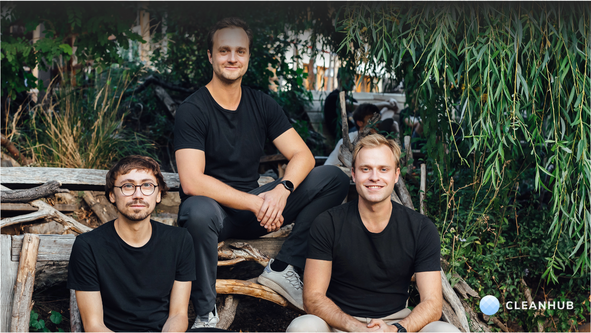
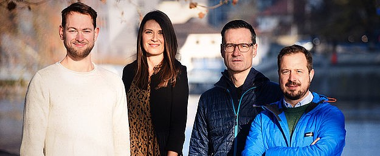

Alex is an entrepreneur and investor who co-founded Übermorgen Ventures, an early-stage venture capital investment company. Übermorgen Ventures backs entrepreneurs developing innovative solutions and business models to mitigate climate change. The team has backed various ventures including Carbo Culture, Einhundert and Carbonfuture.
Übermorgen Ventures has over 30 years of combined experience in entrepreneurship, sustainability and investing. With their investments they seek double-impact in the form of significant financial returns and greenhouse gas reductions.
In this edited conversation with Peter Green, Alex spoke about his background in sustainability and business-building before providing his unique perspective on the climate industry.

Could you explain how Übermorgen Ventures has got to where it is now?
We are a team of four founding partners, each with a different personal journey leading us into the climate space. I personally studied energy economics before starting my career in consulting at McKinsey where I worked for significant stretches in the energy space. This involved contributing towards the electrification of countries in Africa and industry work in Europe.
I later left to create my own consulting firm which focussed only on climate-tech. Then, since I’m based in Zurich where there's a lot of investment activity, I found myself drawn to venture capital. I met my co-founders, Adrian and Myke through a common friend who's also active in the space. Adrian and Myke are tech entrepreneurs who had successful liquidity events in the past which led to them becoming successful angel investors.
After reflecting somewhat on the climate issue they decided to focus their investing talent on the climate space. They decided to onboard Elena, a law-firm founder and start-up lawyer. I joined the team a bit later and brought tech and industry expertise.
At that point we decided to build a venture firm that embraces climate change mitigation as a business opportunity. If we want to live in this world in a couple of decades then we need innovation and tech. So we've created the firm around that guiding principle.

What have been some main challenges you’ve experienced as part of the founding team at Übermorgen Ventures?
For one, climate change is an immensely complex problem because everything we do in our economy is connected to greenhouse gas emissions. So, despite being a climate-tech fund, we are also a generalist fund because we invest in a lot of different areas. This includes funding sectors such as agriculture, food, energy, transportation, advanced manufacturing, carbon capture and more. As a result, if you really want to have meaningful impact in the space, you have to dig into the science, have the right network of people, and have the right expertise. It takes a lot of energy and persistence to keep digging in order to understand the right levers to pull to not only make a profit on the investments, but also to have a meaningful impact.
Secondly, impact in the investing world is a hot topic. Everybody wants to have impact, but nobody really knows how to define it. There's nothing in the venture capital space that really measures or gives a guideline on how to measure the impact of an investor. At Übermorgen Ventures we try to account for this. We have a methodology which we feel gives an indication, a rough estimate at the least. Even within the climate space, where you can put a number on the tonnes of carbon dioxide mitigated, this topic of how to measure impact is an important point to consider.
Another challenge comes in the form of the flow of money. A lot of money has been thrown into the industry right now. This year there was more investment in climate tech VC than in the last five years combined. However, most of that money goes into series A and later stages and there's not a lot of money going to the early stages. Übermorgen Ventures invests in the early stages but in Europe there are many entrepreneurs with great ideas who struggle for capital early on.

How hands-on are you guys with the companies you fund?
All of our team members have founded at least one company and all of our investors are also entrepreneurs. As a result, we can understand the entrepreneurial challenges of our portfolio firms but we don't get too operational. We try to be hands-on from a strategic level, and get involved on request for topics such as fundraising, structuring deals, sales or HR. However, we try not to be operational because most founders know best about their business.
Are there any common challenges that the companies in your portfolio have to face?
It's tough to say given that we invest in so many different areas. However, there are typically two types of start-ups. Firstly, the one led by visionaries where it matters a lot to monitor challenges in the regulatory environment. Founders also need to consider whether they have the IP rights secured, and whether they understand the market dynamics correctly.

Then there's the execution type of start-up where you're innovating more on the business model. In that case you have to get your unit economics under control and know exactly what the dynamics are between your revenue and costs. Knowing how to access different kinds of capital is an important point to consider too.
In general, planning ahead of time is critical. For example, liquidity planning is something that a lot of start-ups don't take too seriously but which can become a pain point later.
What's next for Übermorgen Ventures?
This year we aim to invest in another four or five start-ups. Then, with that portfolio in hand, we will approach new investors in order to extend our portfolio and support our existing companies. Otherwise, we aim to continue to build a brand in this space across Europe. We've done a good job in the last two years as one of the first purely climate-tech funds on this continent. The beauty in Europe at the moment is the collaboration across VC in this space. Currently we work together on making deals and finding the right projects. So, for us as a company, building and strengthening those relationships with existing funds and investors is also key.
What advice might you give to someone else starting on this journey of sustainability-focussed climate businesses and funds?
It's really important to find and follow your North Star and create a network around that North Star. Communicating your passion to your network is a key enabler so that opportunities come to you. As you put yourself out there and offer your support and help on topics you're really, really passionate about things will radiate back. So, if you want to be active in a certain field, and it's hard for you to make a transition into it at the moment, there's always ways to engage or to create a network.
What books might you recommend to someone who's trying to build ventures in this space?
I really liked "How to Avoid a Climate Disaster" by Bill Gates. That's really interesting because he looks at the problem from a capitalistic point of view. We live in a capitalistic world, so it stands to reason that we have to find capitalistic solutions for the problems. Otherwise, one of the books I've gifted most is "How to Change Your Mind" by Michael Pollan relating to the new frontiers of psychedelic medicine.
In addition, for purely entertainment purposes I'm reading a fictional book called "The Three Body Problem" by Liu Cixin, a Chinese science-fiction author and that's a great read.
Interviewer: Peter Green